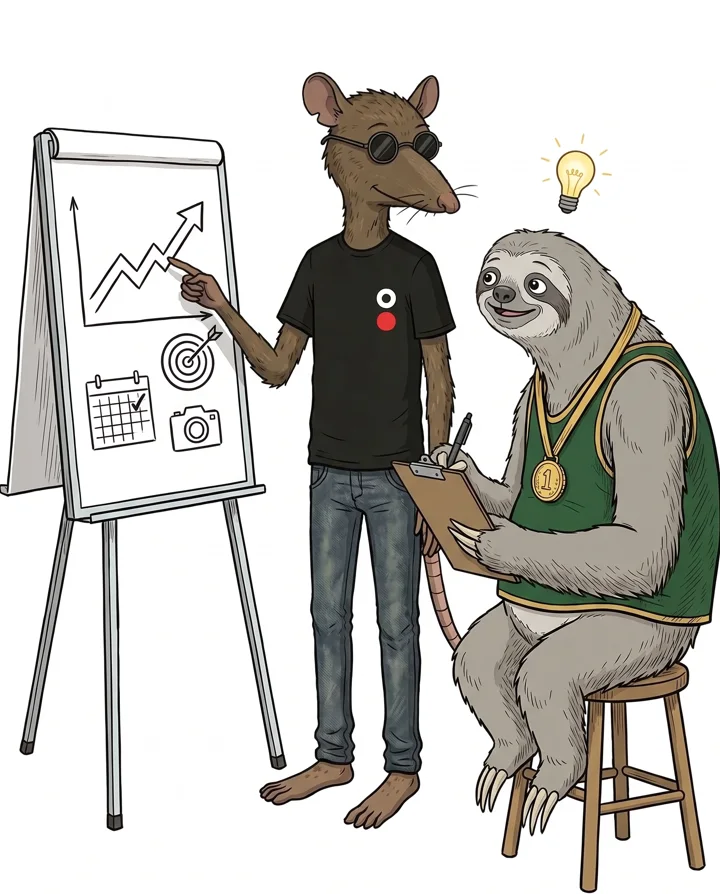

Guías y artículos
Contenido práctico de Pro Motion para deportistas, familias y marcas: cómo traducir el valor deportivo a un lenguaje que una empresa pueda entender, evaluar y justificar.

El incentivo tributario, la pérdida de confianza y el año mundialista: por qué necesitamos construir mejores razones para que las marcas inviertan.
Leer ahora »
El problema no es el talento. Es la traducción. Identifica tu valor real con ejercicios interactivos.
Leer ahora »Tu visibilidad no es constante, es cíclica: se detecta y se aprovecha.
Qué busca realmente un gerente de marketing y cómo justifica internamente un auspicio.
La estructura mínima de un dossier que una empresa puede evaluar.
El deportista como plataforma de experiencias: escuelas, barrios y causas.
Cómo pasar del pedido a la propuesta en una sola reunión.